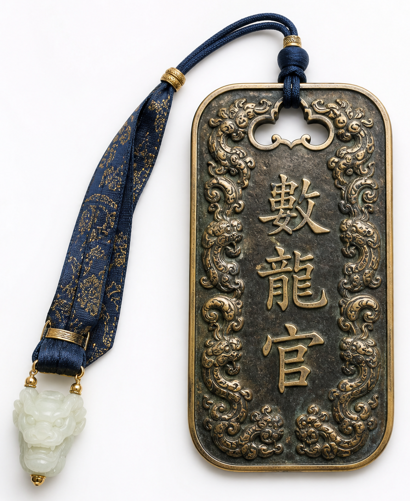
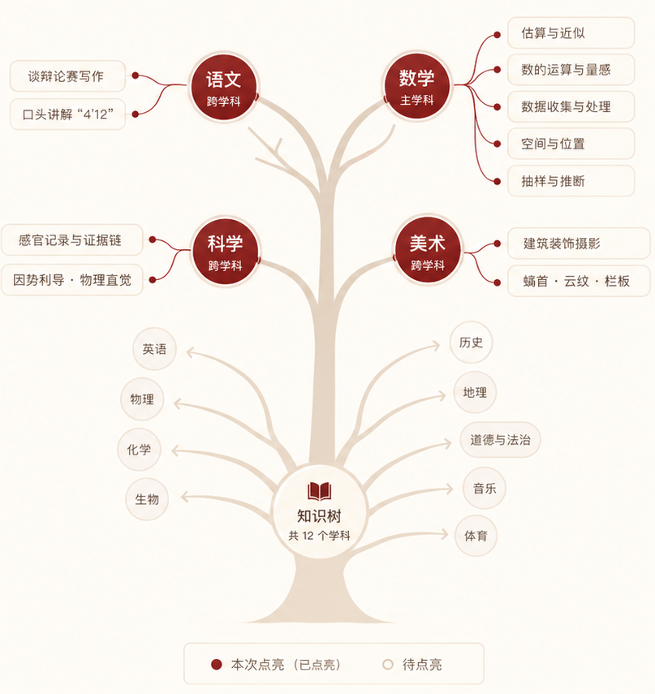
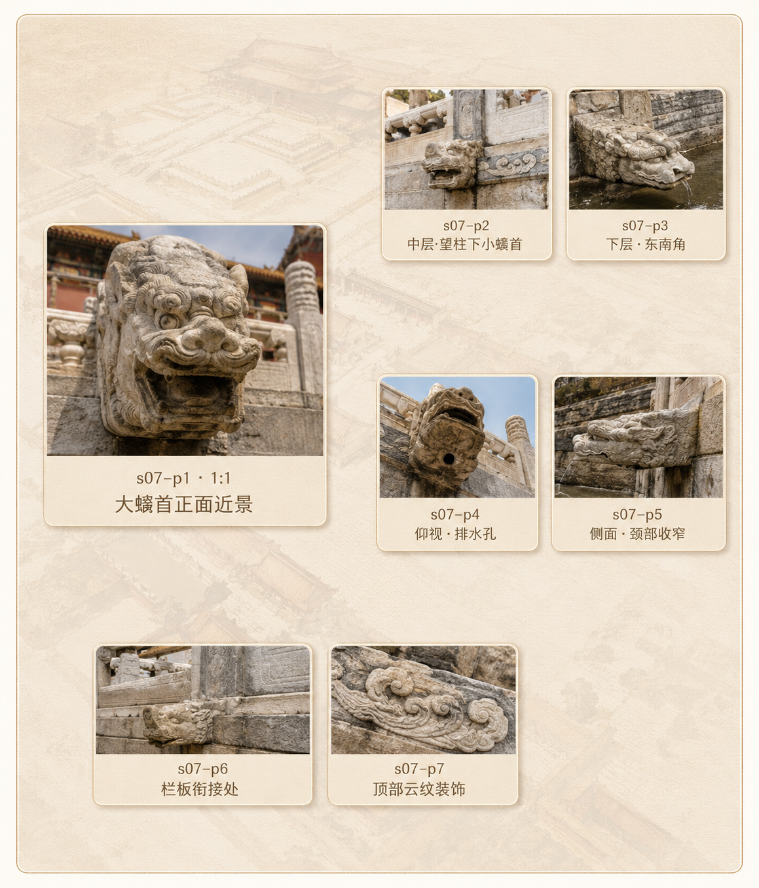
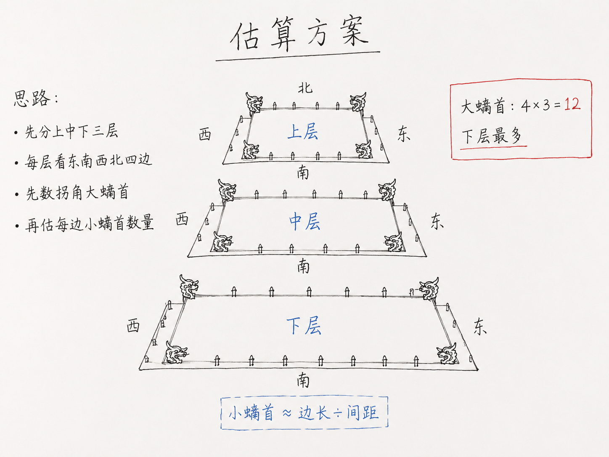
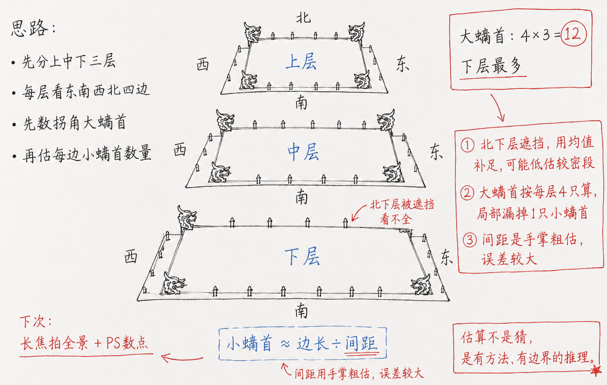

<!DOCTYPE html>
<html lang="zh-CN">
<head>
<meta charset="UTF-8">
<title>研学成长报告 · 数龙官 · 林同学</title>
<style>
/* ========== 设计令牌 ========== */
:root{
  --ink:#231a16;
  --muted:#66584f;
  --light:#8a7a6f;
  --paper:#fffdf8;
  --page:#eee7dc;
  --wash:#f7f1e7;
  --line:#ded3c2;
  --line-dark:#c9b9a3;
  --red:#8c211d;
  --red-dark:#611411;
  --blue:#176987;
  --green:#286b54;
  --gold:#b88738;

  --radius:8px;
  --radius-frame:24px;
  --shadow-frame:0 24px 60px rgba(35,26,22,.14);

  --frame-w:940px;
  --frame-h:2016px;

  --font-display:"Songti SC","Noto Serif SC",serif;
  --font-body:"PingFang SC","Microsoft YaHei","Noto Sans CJK SC",sans-serif;
}

/* ========== 全局重置 ========== */
*,*::before,*::after{margin:0;padding:0;box-sizing:border-box;}
html{font-size:20px;}
body{
  background:var(--page);
  color:var(--ink);
  font-family:var(--font-body);
  font-size:24px;
  line-height:1.8;
  -webkit-font-smoothing:antialiased;
}

/* ========== 舞台 ========== */
.stage{
  display:flex;
  gap:64px;
  padding:72px 64px;
  width:9984px;
  min-height:2160px;
  align-items:center;
}

/* ========== 帧（纸页隐喻） ========== */
.frame{
  width:var(--frame-w);
  height:var(--frame-h);
  flex-shrink:0;
  background:var(--paper);
  border-radius:var(--radius-frame);
  border:1px solid var(--line-dark);
  box-shadow:var(--shadow-frame);
  overflow:hidden;
  display:flex;
  flex-direction:column;
  padding:56px 64px 40px;
}

/* ========== 页眉 ========== */
.frame-header{
  display:flex;
  justify-content:space-between;
  align-items:center;
  padding-bottom:20px;
  border-bottom:3px double var(--line-dark);
  margin-bottom:36px;
  flex-shrink:0;
}
.frame-header .kicker{
  font-size:22px;
  font-weight:900;
  color:var(--red);
  letter-spacing:.2em;
}
.frame-header .page-num{
  font-family:var(--font-display);
  font-size:28px;
  font-weight:900;
  color:var(--light);
}

/* ========== 标题区 ========== */
.frame-title{
  font-family:var(--font-display);
  font-size:64px;
  font-weight:900;
  line-height:1.15;
  color:var(--ink);
  margin-bottom:8px;
}
.frame-subtitle{
  font-size:26px;
  line-height:1.7;
  color:var(--muted);
  margin-bottom:48px;
}

/* ========== 屏1 封面背景 ========== */
#s1{
  background:
    linear-gradient(180deg, rgba(255,253,248,.92) 0%, rgba(255,253,248,.78) 50%, rgba(255,253,248,.95) 100%),
    url("1 素材图/lQLPJwpS1t0RS8fNBIDNCACwCikXJK9D208KEReQoiIMAQ_2048_1152.png") center/cover no-repeat;
}

#s5{
  background:
    linear-gradient(180deg, rgba(255,253,248,.92) 0%, rgba(255,253,248,.78) 50%, rgba(255,253,248,.95) 100%),
    url("1 素材图/lQLPJwpS1t0RS8fNBIDNCACwCikXJK9D208KEReQoiIMAQ_2048_1152.png") center/cover no-repeat;
}

/* ========== 主角区 ========== */
.hero{
  flex:1 1 auto;
  min-height:0;
  display:flex;
  flex-direction:column;
}

/* ========== 配角区 ========== */
.supporting{
  margin-top:40px;
  flex-shrink:0;
}

/* ========== 深色结论块 ========== */
.dark-block{
  background:var(--ink);
  color:var(--paper);
  border-radius:var(--radius);
  padding:32px;
  margin-top:40px;
  flex-shrink:0;
}
.dark-block.red{
  background:var(--red-dark);
}
.dark-block .block-label{
  font-size:22px;
  font-weight:900;
  letter-spacing:.1em;
  color:var(--wash);
  margin-bottom:12px;
}
.dark-block .block-body{
  font-size:24px;
  line-height:1.8;
  color:var(--paper);
}
.dark-block .block-hint{
  font-size:20px;
  color:var(--line);
  margin-top:8px;
  line-height:1.5;
}

/* ========== 页脚 ========== */
.frame-footer{
  display:flex;
  justify-content:space-between;
  align-items:center;
  padding-top:16px;
  border-top:1px solid var(--line);
  margin-top:auto;
  flex-shrink:0;
  font-size:20px;
  color:var(--light);
  font-weight:700;
}

/* ========== 卡片 ========== */
.card{
  background:var(--paper);
  border:1px solid var(--line);
  border-radius:var(--radius);
  padding:32px;
}
.card.wash{
  background:var(--wash);
}

/* ========== KPI 卡 ========== */
.kpi{
  background:var(--paper);
  border:1px solid var(--line);
  border-radius:var(--radius);
  padding:28px;
  display:flex;
  flex-direction:column;
  gap:6px;
}
.kpi .k{
  font-size:20px;
  color:var(--light);
  font-weight:700;
}
.kpi .v{
  font-family:var(--font-display);
  font-size:64px;
  font-weight:900;
  line-height:1;
  color:var(--ink);
}
.kpi .v.hero-num{
  font-size:120px;
}
.kpi .v .u{
  font-size:24px;
  font-family:var(--font-body);
  font-weight:700;
  color:var(--muted);
  margin-left:4px;
}
.kpi .hint{
  font-size:20px;
  color:var(--muted);
  line-height:1.5;
}
.kpi .v.red-num{
  color:var(--red);
}

/* ========== Badge ========== */
.badge{
  display:inline-flex;
  align-items:center;
  height:34px;
  padding:0 14px;
  border:1px solid var(--line-dark);
  border-radius:var(--radius);
  font-size:20px;
  font-weight:700;
  color:var(--ink);
  background:var(--paper);
  white-space:nowrap;
}
.badge.red{
  border-color:var(--red);
  color:var(--red);
}
.badge.blue{
  border-color:var(--blue);
  color:var(--blue);
}
.badge.green{
  border-color:var(--green);
  color:var(--green);
}

/* ========== 印章 ========== */
.seal{
  display:inline-flex;
  align-items:center;
  justify-content:center;
  border:2px solid var(--red);
  border-radius:var(--radius);
  color:var(--red);
  font-family:var(--font-display);
  font-size:22px;
  font-weight:900;
  padding:8px 14px;
  background:var(--paper);
  transform:rotate(-3deg);
  white-space:nowrap;
  flex-shrink:0;
}

/* ========== Tab ========== */
.tabs{
  display:flex;
  gap:0;
  border-bottom:2px solid var(--line);
  margin-bottom:32px;
  flex-shrink:0;
}
.tab{
  height:72px;
  display:flex;
  align-items:center;
  justify-content:center;
  padding:0 32px;
  font-size:24px;
  font-weight:900;
  color:var(--muted);
  cursor:pointer;
  border-bottom:3px solid transparent;
  margin-bottom:-2px;
  transition:color .2s,border-color .2s;
}
.tab.active{
  color:var(--red);
  border-bottom-color:var(--red);
}
.tab:hover{
  color:var(--ink);
}

/* ========== 进度条 ========== */
.bar{
  height:14px;
  background:#e5d9c8;
  border-radius:999px;
  overflow:hidden;
}
.bar i{
  display:block;
  height:100%;
  background:var(--red);
  border-radius:999px;
}

/* ========== 令牌 ========== */
.token{
  display:inline-flex;
  align-items:center;
  justify-content:center;
  width:72px;
  height:90px;
  border:1.5px solid var(--red);
  border-radius:var(--radius);
  font-family:var(--font-display);
  font-size:40px;
  font-weight:900;
  color:var(--red);
  background:var(--paper);
}

/* ========== 五维方印 ========== */
.stamp{
  width:48px;
  height:48px;
  border:1.5px solid var(--red);
  border-radius:var(--radius);
  display:inline-flex;
  align-items:center;
  justify-content:center;
  font-family:var(--font-display);
  font-size:28px;
  font-weight:900;
  color:var(--red);
  background:var(--paper);
  flex-shrink:0;
}

/* ========== 地图/SVG 容器 ========== */
.map-box{
  background:#fffdf3;
  border:1px solid var(--line);
  border-radius:var(--radius);
  overflow:hidden;
}
.map-box svg{
  display:block;
  width:100%;
  height:100%;
}

/* ========== 照片网格 ========== */
.photo-grid{
  display:grid;
  gap:12px;
}
.photo-grid .ph{
  position:relative;
  overflow:hidden;
  border-radius:var(--radius);
  background:var(--wash);
}
.photo-grid .ph img{
  width:100%;
  height:100%;
  object-fit:cover;
  display:block;
}
.photo-grid .cap{
  position:absolute;
  bottom:0;
  left:0;
  right:0;
  padding:8px 12px;
  background:rgba(35,26,22,.65);
  color:var(--paper);
  font-size:20px;
  font-weight:700;
}

/* ========== 生图占位框 ========== */
.img-slot{
  position:relative;
  background:var(--wash);
  border:1px dashed var(--line-dark);
  border-radius:var(--radius);
  overflow:hidden;
  display:flex;
  align-items:center;
  justify-content:center;
  flex-direction:column;
}
.img-slot .slot-label{
  font-size:20px;
  color:var(--muted);
  text-align:center;
  line-height:1.5;
  padding:20px;
}
.img-slot img{
  position:absolute;
  inset:0;
  width:100%;
  height:100%;
  object-fit:cover;
}

/* ========== 雷达图维度详情卡 ========== */
.radar-detail{
  background:var(--paper);
  border:1px solid var(--line);
  border-radius:var(--radius);
  padding:28px 32px;
  transition:all .25s;
}
.radar-detail.active{border-left:5px solid var(--red);}
.radar-detail .rd-head{
  display:flex;align-items:center;gap:12px;margin-bottom:14px;
}
.radar-detail .rd-dim{
  font-size:28px;font-weight:900;color:var(--ink);
}
.radar-detail .rd-score{
  display:inline-flex;align-items:center;gap:6px;
  background:linear-gradient(135deg,var(--red),#b5342f);
  color:#fff;font-size:22px;font-weight:800;
  padding:4px 14px;border-radius:20px;
}
.radar-detail .rd-rating{
  font-size:20px;color:var(--red);font-weight:700;
  border:1.5px solid var(--red);padding:2px 10px;border-radius:12px;
}
.radar-detail .rd-def{
  font-size:22px;color:var(--muted);line-height:1.6;margin-bottom:14px;
}
.radar-detail .rd-ref{margin-bottom:14px;}
.radar-detail .rd-ref-title{
  font-size:20px;color:var(--light);font-weight:700;margin-bottom:6px;
}
.radar-detail .rd-ref ul{
  list-style:none;padding:0;margin:0;display:flex;flex-wrap:wrap;gap:8px;
}
.radar-detail .rd-ref li{
  font-size:20px;color:var(--muted);
  background:var(--wash);border:1px solid var(--line);
  padding:3px 12px;border-radius:14px;
}
.radar-detail .rd-avg{
  font-size:20px;color:var(--light);margin-bottom:14px;
}
.radar-detail .rd-avg b{color:var(--ink);font-weight:800;}
.radar-detail .rd-why-title{
  font-size:20px;color:var(--red);font-weight:800;margin-bottom:6px;
}
.radar-detail .rd-why{
  font-size:22px;line-height:1.7;color:var(--ink);
}

/* ========== AI 总结列表 ========== */
.ai-summary{list-style:none;padding:0;margin:0;}
.ai-summary li{
  position:relative;padding-left:20px;
  font-size:22px;line-height:1.8;color:var(--muted);
}
.ai-summary li::before{
  content:"•";position:absolute;left:0;color:var(--red);font-weight:900;
}
/* ========== 语音回放按钮 ========== */
.audio-btn{
  display:inline-flex;align-items:center;gap:8px;
  background:var(--wash);border:1.5px solid var(--line);
  padding:8px 18px;border-radius:20px;cursor:pointer;
  font-size:20px;color:var(--muted);font-family:var(--font-body);
  transition:all .2s;
}
.audio-btn:hover{border-color:var(--red);color:var(--red);}
.audio-btn svg{width:18px;height:18px;}
/* ========== 演讲评分条 ========== */
.speech-scores{display:flex;flex-wrap:wrap;gap:12px;margin:16px 0;}
.speech-score-item{
  display:flex;align-items:center;gap:8px;
  background:var(--wash);border:1px solid var(--line);
  padding:6px 16px;border-radius:16px;font-size:20px;
}
.speech-score-item .ss-label{color:var(--muted);font-weight:600;}
.speech-score-item .ss-val{color:var(--red);font-weight:900;}

/* ========== 五维卡（左侧红线） ========== */
.suzhi-card{
  background:var(--paper);
  border:1px solid var(--line);
  border-left:6px solid var(--red);
  border-radius:var(--radius);
  padding:32px;
}
.suzhi-card .sc-head{
  display:flex;
  align-items:center;
  gap:16px;
  margin-bottom:16px;
}
.suzhi-card .sc-title{
  font-size:34px;
  font-weight:900;
}
.suzhi-card .sc-body{
  font-size:24px;
  line-height:1.8;
  color:var(--ink);
}
.suzhi-card .sc-hint{
  font-size:20px;
  line-height:1.6;
  color:var(--muted);
  margin-top:12px;
}

/* ========== 辅助 ========== */
.divider{
  height:1px;
  background:var(--line);
  margin:16px 0;
}
.flex-col{display:flex;flex-direction:column;}
.gap-24{gap:24px;}
.gap-40{gap:40px;}
.mt-40{margin-top:40px;}
.mt-48{margin-top:48px;}

/* ========== 响应式：不做，固定 9984px ========== */
</style>
</head>
<body>

<div class="stage">
  <article class="frame" id="s1"></article>
  <article class="frame" id="s2"></article>
  <article class="frame" id="s3"></article>
  <article class="frame" id="s4"></article>
  <article class="frame" id="s6"></article>
  <article class="frame" id="s7"></article>
  <article class="frame" id="s8"></article>
  <article class="frame" id="s9"></article>
  <article class="frame" id="s10"></article>
  <article class="frame" id="s5"></article>
</div>

<script>
// ============= 数据：一处集中 =============
const D = {
  student:{name:"林同学",grade:"初二",school:"北京市第 X 中学",role:"数龙官",id:"GG-600-SLG-2026-042",date:"2026-07-08",team:"第 3 分队 · 青龙组"},
  achieve:{
    duration:"5 小时 30 分",
    steps:14523,
    photos:18,
    photoValid:15,
    checkpoints:12,
    puzzleAcc:"96%",
    reflectWords:412,
    audioMin:6.4,
    canvasStrokes:38,
    zoneTop:["太和殿","保和殿","中和殿","太和门","内金水河（玉带段）"]
  },
  team:{
    size:5,
    tokens:6,
    photos:87,
    steps:71260,
    finished:"6/6",
    helpGiven:2, helpReceived:1,
    mvp:"林同学 · 反思深度第一"
  },
  radar:{
    参与度:92,投入度:88,合作度:85,敏捷度:78,表达力:90
  },
  radarExplain:{
    参与度:{
      def:"围绕任务地点的实际停留与主动操作程度",
      ref:["移动轨迹密度","拍照次数","备忘录/画板/语音工具使用"],
      avg:81,
      rating:"优秀",
      why:"移动轨迹覆盖太和殿月台东南西北四面；三层月台各拍 2 张以上有效照片；备忘录、画板、语音三种工具均有使用。"
    },
    投入度:{
      def:"任务作答的认真程度与深度",
      ref:["填报内容丰富度","反思文本长度","画板草稿完成度","语音推理时长"],
      avg:76,
      rating:"优秀",
      why:"「算其数」写了 132 字分层估算方案；反思卷宗共 412 字并附草稿；语音累计 6.4 分钟，全班平均的 1.6 倍。"
    },
    合作度:{
      def:"与同组同伴形成有效协作的程度",
      ref:["轨迹重合度","时间银行借入/借出","共同产出完成度"],
      avg:79,
      rating:"良好",
      why:"中层计数环节与同伴路径重合 42%；主动向另一组「送」了 3 分钟；小组 6 张令牌全部集齐、合作完成水系图与演讲。"
    },
    敏捷度:{
      def:"在合理范围内又快又好，速度与正确率的乘积",
      ref:["关卡平均用时","估算误差率","任务完成节奏"],
      avg:72,
      rating:"良好",
      why:"三个关卡平均用时 17.5 分钟，比推荐 20 分钟节约 12.5%；估算误差仅 1.23%（目标 ±3% 内）。"
    },
    表达力:{
      def:"能否把「我怎么想的」讲清楚",
      ref:["反思文本结构","语音表达","课后演讲"],
      avg:74,
      rating:"优秀",
      why:"独立完成 4 分 12 秒的水系演讲，讲清「螭首→坡度→暗沟→金水河→护城河」水路；反思文本含 3 处「因为…所以…」结构。"
    }
  },
  task1:{
    photos:[
      {src:"1 素材图/lQLPJx6SDOQMJWfNBIDNCACwHtwpGJRWt28KERw9prL7Ag_2048_1152.png",cap:"上层·大螭首正面"},
      {src:"1 素材图/lQLPJx7s_-3X4sfNBIDNCACwH9wOqFWGNX8KERebFCMBAA_2048_1152.png",cap:"中层·望柱下小螭首"},
      {src:"1 素材图/lQLPJwaM9Oi4lWfNBIDNCACw4oZLF_PJpvEKERw9prL7AQ_2048_1152.png",cap:"下层·东南角"},
      {src:"1 素材图/lQLPJwidX3ynYsfNBIDNCACwpmZC8lFRJPoKEReboROfAA_2048_1152.png",cap:"仰视·排水孔"},
      {src:"1 素材图/lQLPJwpS1t0RS8fNBIDNCACwCikXJK9D208KEReQoiIMAQ_2048_1152.png",cap:"侧面·颈部收窄"},
      {src:"1 素材图/lQLPKHPOGzeibMfNBIDNCACwihbqUHRugmgKEReQoiIMAA_2048_1152.png",cap:"栏板衔接处"},
      {src:"1 素材图/lQLPKHq9cMX_ssfNBIDNCACwhwf3WKztuMoKERebG540AA_2048_1152.png",cap:"顶部云纹装饰"}
    ],
    acc:96,
    aiComment:"拍摄覆盖了螭首上中下三层，正面、侧面、仰视三个角度都有；尤其仰视排水孔那张，是大多数同学没有注意到的细节。",
    aiSummary:["7 张照片命中 5 个关键拼图部位，2 张略偏但可辨识","覆盖上中下三层 + 正面/侧面/仰视三个角度","仰视·排水孔是全班唯一捕捉到的稀有视角","云纹装饰细节照可作为「礼制符号」延伸探究素材"],
    audioLen:"2′15″"
  },
  task2:{
    plan:"我把三层月台按上→中→下分层。每层拆成东、南、西、北四段，先数拐角的大螭首（4 个×3 层=12），再用「望柱间距 × 每边长度」的方法反推小螭首。上层因为月台最小、望柱最疏，数值偏小；下层望柱最密，估算值最大。北面下层被游客挡了一段，我按相邻两段均值补足。",
    layers:{top:270,mid:386,bot:472,total:1128,ref:1142},
    method:"分层分段计数法",
    audioLen:"3′48″",
    canvasNote:"草稿包含三层俯视示意图 + 「回」字分四段的辅助线",
    aiComment:"采用「分层→分段→逐段估数」的完整链路，思路在初中生中属于上乘；北下层的补足策略体现了处理缺失数据的意识。",
    aiSummary:["采用分层分段计数法：上→中→下三层，每层拆东南西北四段","先锁定大螭首（4×3=12），再用望柱间距反推小螭首","北下层被遮挡时，用相邻段均值补足——有缺失数据处理意识","合计估算 1128 只，与真实值 1142 仅差 1.23%"]
  },
  task3:{
    err:1.23,
    diff:-14,
    reflect:"这次我少估了 14 只。回看方案，我觉得三处会导致偏少：① 北下层被游客挡时用均值补足，可能低估了较密段；② 我把大螭首严格算成「每层 4 只」，但实际下层角部还有额外一只礼制大螭首没算进去；③ 望柱间距我用手掌粗略比划，如果拿卷尺会更准。下一次我打算用长焦拍一张全景，回来在 PS 里数点。「千龙」不是夸张，但也不是恰好一千，古人用「千」是描述一种规模感。这次让我明白：估算不是猜，是有方法有边界的推理。",
    canvasNote:"草稿包含误差分解图 + 三条改进箭头",
    level:"L3 · 证据自觉",
    audioLen:"4′02″",
    aiComment:"没有将误差归因于运气，而是拆解为 3 个可改进因素——这是研究者的思维方式，评为「证据自觉」等级。",
    aiSummary:["误差 -14 只（1.23%），归因拆解为 3 个具体因素","① 北下层遮挡段用均值补足，可能低估密段","② 大螭首漏算下层额外礼制螭首","③ 望柱间距用手掌比划，精度不足","「千龙」不是恰好一千，而是规模感的表达——体现了对数量级的理解"]
  },
  task4:{
    speaker:"王同学",
    speechLen:"5′19″",
    motto:"因势利导",
    eval:{完整度:92,流畅度:85,科学性:88,审辩性:90,表达力:87},
    aiSummary:["演讲完整覆盖「螭首→坡度→明沟暗沟→内金水河→外金水河→护城河→通惠河」全链路","用「古人不是压水，是给水让路」做总结立意，有提炼能力","引用了实地测量数据（坡度、螭首数量），增强说服力","审辩性突出：主动区分了「排水设计」与「自然地势」的各自贡献"]
  }
};

// ============= 中文页码 =============
const CN_NUM = ['〇','一','二','三','四','五','六','七','八','九','十'];
function cnPage(n){ return n<=10 ? CN_NUM[n] : String(n); }

// ============= 公共工具：帧壳 =============
const TOTAL = 10;
function frameShell(el, idx, kicker, title, subtitle, bodyHTML){
  el.innerHTML = `
    <div class="frame-header">
      <span class="kicker">${kicker}</span>
      <span class="page-num">${cnPage(idx)}</span>
    </div>
    ${title ? `<h1 class="frame-title">${title}</h1>` : ''}
    ${subtitle ? `<p class="frame-subtitle">${subtitle}</p>` : ''}
    <div class="hero">${bodyHTML}</div>
    <div class="frame-footer">
      <span>故宫600年不积水的秘密 · 数龙官线</span>
    </div>
  `;
}

// ============= 生图占位组件 =============
function imgSlot(id, w, h, desc){
  return `<div class="img-slot" style="width:${w}px;height:${h}px;max-width:100%;">
    
    <div class="slot-label">${id} · ${w}:${h}<br>${desc}</div>
  </div>`;
}

// ============= 屏 1：封面 =============
frameShell(document.getElementById('s1'), 1, '研学成长报告', '', '', `
  <div style="flex:1;display:flex;flex-direction:column;justify-content:center;">
    <h1 style="font-family:var(--font-display);font-size:96px;font-weight:900;line-height:1.08;margin-bottom:24px;">
      故宫600年<br><span style="color:var(--red)">不积水</span>的秘密
    </h1>
    <div style="display:flex;gap:10px;flex-wrap:wrap;margin-bottom:48px;">
      <span class="badge red">主学科 · 数学</span>
      <span class="badge">跨 · 科学</span>
      <span class="badge">跨 · 美术</span>
      <span class="badge">跨 · 语文表达</span>
    </div>

    <div class="card" style="padding:32px;display:flex;align-items:center;gap:28px;">
      <div style="flex:1;">
        <div style="display:flex;align-items:center;gap:20px;margin-bottom:16px;">
          <div class="stamp">数</div>
          <div>
            <div style="font-size:34px;font-weight:900;">${D.student.name}</div>
            <div style="color:var(--muted);font-size:22px;margin-top:4px;">${D.student.school} · ${D.student.grade}</div>
          </div>
        </div>
        <div class="divider"></div>
        <div style="display:grid;grid-template-columns:1fr 1fr;gap:12px 24px;font-size:22px;color:var(--muted);">
          <div><span style="color:var(--light)">分队</span>　${D.student.team}</div>
          <div><span style="color:var(--light)">日期</span>　${D.student.date}</div>
          <div><span style="color:var(--light)">导师</span>　王老师</div>
          <div><span style="color:var(--light)">身份令牌</span>　数龙官</div>
        </div>
      </div>
      
    </div>
  </div>

  <div class="dark-block" style="margin-top:40px;">
    <div class="block-label">你今天做到的事</div>
    <div class="block-body">完成 3 大关卡 + 集齐 6 张令牌 + 独立完成水系图与演讲</div>
  </div>
`);

// ============= 屏 2：成就（Tab 切换） =============
frameShell(document.getElementById('s2'), 2, '成就回顾', '你的这一天', '', `
  <div class="tabs" id="tabs2">
    <div class="tab active" data-t="me">我的成就</div>
    <div class="tab" data-t="team">团队成就</div>
  </div>

  <div id="pane-me" style="display:flex;flex-direction:column;flex:1;min-height:0;gap:24px;">

    <div style="display:flex;align-items:stretch;gap:0;background:var(--wash);border-radius:16px;padding:24px 12px;position:relative;">
      ${[
        {n:1,loc:'沉浸空间',name:'任务领取'},
        {n:2,loc:'故宫',name:'观其形'},
        {n:3,loc:'故宫',name:'算其数'},
        {n:4,loc:'故宫',name:'验其差'},
        {n:5,loc:'沉浸空间',name:'真相推演'}
      ].map((s,i,a)=>`
        <div style="flex:1;display:flex;flex-direction:column;align-items:center;gap:6px;position:relative;">
          <div style="width:36px;height:36px;border-radius:50%;background:var(--red);color:#fff;font-size:18px;font-weight:900;display:flex;align-items:center;justify-content:center;">${s.n}</div>
          <div style="background:var(--paper);border:1px solid var(--line);border-radius:12px;padding:10px 8px;text-align:center;width:100%;">
            <div style="font-size:16px;color:var(--light);display:flex;align-items:center;justify-content:center;gap:4px;">
              <svg width="12" height="12" viewBox="0 0 24 24" fill="var(--red)" stroke="none"><path d="M12 2C8.13 2 5 5.13 5 9c0 5.25 7 13 7 13s7-7.75 7-13c0-3.87-3.13-7-7-7zm0 9.5c-1.38 0-2.5-1.12-2.5-2.5s1.12-2.5 2.5-2.5 2.5 1.12 2.5 2.5-1.12 2.5-2.5 2.5z"/></svg>
              ${s.loc}
            </div>
            <div style="font-size:20px;font-weight:900;color:var(--ink);margin-top:4px;">${s.name}</div>
          </div>
          ${i<a.length-1?`<div style="position:absolute;right:-12px;top:18px;color:var(--red);font-size:18px;z-index:1;">→</div>`:''}
        </div>
      `).join('')}
    </div>

    <div style="display:flex;gap:12px;align-items:stretch;font-size:22px;">
      ${[
        {icon:'🕐',label:'探索时长',val:D.achieve.duration,unit:''},
        {icon:'🚶',label:'步行步数',val:D.achieve.steps.toLocaleString(),unit:''},
        {icon:'📷',label:'拍摄照片',val:D.achieve.photos,unit:' 张'},
        {icon:'✏️',label:'反思文字',val:D.achieve.reflectWords,unit:' 字'}
      ].map(k=>`
        <div style="flex:1;background:var(--page);border-radius:12px;padding:20px 16px;text-align:center;">
          <div style="font-size:28px;margin-bottom:6px;">${k.icon}</div>
          <div style="color:var(--muted);font-size:18px;margin-bottom:6px;">${k.label}</div>
          <div style="font-size:32px;font-weight:900;color:var(--ink);">${k.val}<span style="font-size:18px;font-weight:400;">${k.unit}</span></div>
        </div>
      `).join('')}
    </div>

    <div style="flex:1;display:flex;flex-direction:column;min-height:400px;">
      <div style="font-size:20px;color:var(--muted);margin-bottom:12px;display:flex;align-items:center;gap:6px;">
        <svg width="16" height="16" viewBox="0 0 24 24" fill="var(--red)" stroke="none"><path d="M12 2C8.13 2 5 5.13 5 9c0 5.25 7 13 7 13s7-7.75 7-13c0-3.87-3.13-7-7-7zm0 9.5c-1.38 0-2.5-1.12-2.5-2.5s1.12-2.5 2.5-2.5 2.5 1.12 2.5 2.5-1.12 2.5-2.5 2.5z"/></svg>
        今日行动路线
      </div>
      <div class="map-box" style="flex:1;overflow:hidden;">
        
      </div>
    </div>

    <div class="dark-block">
      <div class="block-label">今日专属徽章 · 「证据自觉」</div>
      <div class="block-hint">在 1 次任务中同时完成：分层方案 + 误差分解 + 3 条以上改进项</div>
    </div>
  </div>

  <div id="pane-team" style="display:none;flex-direction:column;flex:1;min-height:0;gap:32px;">
    <div style="display:grid;grid-template-columns:1fr 1fr 1fr;gap:24px;">
      <div class="kpi">
        <span class="k">队伍规模</span>
        <span class="v">${D.team.size}<span class="u">人</span></span>
        <span class="hint">${D.student.team}</span>
      </div>
      <div class="kpi">
        <span class="k">身份令牌</span>
        <span class="v">${D.team.tokens}<span class="u">/6</span></span>
        <span class="hint">Y · S · L · D · in · 52 全部集齐</span>
      </div>
      <div class="kpi">
        <span class="k">全队关卡</span>
        <span class="v">${D.team.finished}</span>
        <span class="hint">6 位理水官同步通关</span>
      </div>
    </div>

    <div class="map-box" style="flex:1;min-height:560px;overflow:hidden;">
      
    </div>

    <div style="display:grid;grid-template-columns:1fr 1fr;gap:24px;">
      <div class="kpi">
        <span class="k">合计拍摄</span>
        <span class="v">${D.team.photos}<span class="u">张</span></span>
        <span class="hint">合计步数 ${D.team.steps.toLocaleString()} 步</span>
      </div>
      <div class="kpi">
        <span class="k">时间银行 · 协作</span>
        <span class="v">${D.team.helpGiven}<span class="u">送</span> · ${D.team.helpReceived}<span class="u">求助</span></span>
        <span class="hint">你主动送时 3 分钟给引河组</span>
      </div>
    </div>

    <div class="dark-block">
      <div class="block-label">队伍称号 · 「因势导流 · 青龙组」</div>
      <div class="block-hint">全组集齐口诀「因势利导」，并提交完整水系图</div>
    </div>
  </div>
`);

// Tab 交互
(function(){
  const tabs = document.querySelectorAll('#tabs2 .tab');
  tabs.forEach(t=>t.addEventListener('click',()=>{
    tabs.forEach(x=>x.classList.remove('active'));
    t.classList.add('active');
    const k = t.dataset.t;
    document.getElementById('pane-me').style.display = k==='me'?'flex':'none';
    document.getElementById('pane-team').style.display = k==='team'?'flex':'none';
  }));
})();

// ============= 屏 3：学科版图（技能树） =============
function skillTreeSVG(){
  var TX=90,y=50,o='';
  var items=[
    {n:'语文',lit:1,tag:'跨学科',b:['逻辑段落写作','口头讲解 4′12″']},
    {n:'英语'},
    {n:'数学',lit:1,tag:'主学科',main:1,b:['估算与近似','数的运算与量感','数据收集与处理','空间与位置','抽样与推断']},
    {n:'物理'},{n:'化学'},{n:'生物'},
    {n:'科学',lit:1,tag:'跨学科',b:['感官记录与证据链','因势利导 · 物理直觉']},
    {n:'历史'},{n:'地理'},{n:'道德与法治'},
    {n:'美术',lit:1,tag:'跨学科',b:['建筑装饰摄影','螭首 · 云纹 · 栏板']},
    {n:'音乐'},{n:'体育'}
  ];
  items.forEach(function(s){
    s.ny=y;
    if(s.lit&&s.b){s.sy=s.b.map(function(_,i){return y+44+i*40;});y=s.sy[s.sy.length-1]+50;}
    else{y+=54;}
  });
  var H=y+50;
  o+='<defs><filter id="gl" x="-50%" y="-50%" width="200%" height="200%"><feGaussianBlur in="SourceGraphic" stdDeviation="5"/></filter></defs>';
  o+='<line x1="'+TX+'" y1="30" x2="'+TX+'" y2="'+(H-20)+'" stroke="var(--line-dark)" stroke-width="2"/>';
  o+='<text x="'+(TX+44)+'" y="28" font-size="20" fill="var(--light)" font-family="var(--font-body)" font-weight="700">初中全学科</text>';
  items.forEach(function(s){
    if(s.lit){
      var r=s.main?14:10,fs=s.main?30:26,vy=s.main?11:9;
      o+='<circle cx="'+TX+'" cy="'+s.ny+'" r="'+(r*3)+'" fill="var(--red)" opacity=".06" filter="url(#gl)"/>';
      o+='<circle cx="'+TX+'" cy="'+s.ny+'" r="'+r+'" fill="var(--red)"/>';
      o+='<line x1="'+(TX+r)+'" y1="'+s.ny+'" x2="'+(TX+34)+'" y2="'+s.ny+'" stroke="var(--red)" stroke-width="'+(s.main?3:2)+'"/>';
      o+='<text x="'+(TX+42)+'" y="'+(s.ny+vy)+'" font-size="'+fs+'" font-weight="900" fill="var(--red)" font-family="var(--font-body)">'+s.n+'</text>';
      var nw=s.n.length*fs;
      o+='<text x="'+(TX+42+nw+16)+'" y="'+(s.ny+7)+'" font-size="20" fill="var(--muted)" font-family="var(--font-body)">'+s.tag+'</text>';
      if(s.sy){var bx=TX+52;
        o+='<line x1="'+bx+'" y1="'+s.sy[0]+'" x2="'+bx+'" y2="'+s.sy[s.sy.length-1]+'" stroke="var(--red)" stroke-width="1.5" opacity=".2"/>';
        s.sy.forEach(function(sy,i){
          o+='<line x1="'+bx+'" y1="'+sy+'" x2="'+(bx+20)+'" y2="'+sy+'" stroke="var(--red)" stroke-width="1.5" opacity=".35"/>';
          o+='<circle cx="'+(bx+26)+'" cy="'+sy+'" r="3.5" fill="var(--red)" opacity=".4"/>';
          o+='<text x="'+(bx+40)+'" y="'+(sy+7)+'" font-size="22" fill="var(--ink)" font-family="var(--font-body)">'+s.b[i]+'</text>';
        });
      }
    }else{
      o+='<circle cx="'+TX+'" cy="'+s.ny+'" r="5" fill="none" stroke="var(--line-dark)" stroke-width="1.5"/>';
      o+='<line x1="'+(TX+8)+'" y1="'+s.ny+'" x2="'+(TX+38)+'" y2="'+s.ny+'" stroke="var(--line-dark)" stroke-width="1" stroke-dasharray="4 3"/>';
      o+='<text x="'+(TX+46)+'" y="'+(s.ny+7)+'" font-size="22" fill="var(--light)" font-family="var(--font-body)">'+s.n+'</text>';
    }
  });
  var ly=H-14;
  o+='<circle cx="'+TX+'" cy="'+ly+'" r="6" fill="var(--red)"/>';
  o+='<text x="'+(TX+14)+'" y="'+(ly+6)+'" font-size="20" fill="var(--muted)" font-family="var(--font-body)">本次点亮</text>';
  o+='<circle cx="'+(TX+130)+'" cy="'+ly+'" r="5" fill="none" stroke="var(--line-dark)" stroke-width="1.5"/>';
  o+='<text x="'+(TX+144)+'" y="'+(ly+6)+'" font-size="20" fill="var(--muted)" font-family="var(--font-body)">待点亮</text>';
  return '<svg viewBox="0 0 812 '+H+'" preserveAspectRatio="xMidYMid meet" style="width:100%;height:100%;display:block;">'+o+'</svg>';
}

frameShell(document.getElementById('s3'), 3, '能力发展', '点亮的学科版图', '完成更多任务后，灰色枝条也会逐渐亮起，连成你的能力画像。', `
  <div class="tabs" id="tabs3">
    <div class="tab active" data-t="tree">
      <svg width="22" height="22" viewBox="0 0 24 24" fill="none" stroke="currentColor" stroke-width="2" style="margin-right:8px;"><path d="M12 2v8m0 0l-4-3m4 3l4-3M12 10v6m0 0H6m6 0h6M6 16v4m12-4v4"/></svg>
      树状视图
    </div>
    <div class="tab" data-t="data">
      <svg width="22" height="22" viewBox="0 0 24 24" fill="none" stroke="currentColor" stroke-width="2" style="margin-right:8px;"><circle cx="12" cy="12" r="3"/><path d="M12 2v4m0 12v4M2 12h4m12 0h4m-3.5-7.5l-2.8 2.8m-7.4 7.4l-2.8 2.8m0-13l2.8 2.8m7.4 7.4l2.8 2.8"/></svg>
      数据视图
    </div>
  </div>

  <div id="pane-tree" style="flex:1;display:flex;flex-direction:column;min-height:0;">
    <div class="map-box" style="flex:1;min-height:0;overflow:hidden;">
      
    </div>
  </div>

  <div id="pane-data" style="flex:1;display:none;flex-direction:column;min-height:0;">
    <div class="map-box" style="flex:1;min-height:0;padding:32px 24px;">
      ${skillTreeSVG()}
    </div>
  </div>

  <div class="dark-block" style="margin-top:40px;">
    <div class="block-label">本次点亮的核心素养</div>
    <div style="display:flex;gap:10px;flex-wrap:wrap;margin-top:16px;">
      <span class="badge red">数感</span><span class="badge red">量感</span><span class="badge red">运算能力</span>
      <span class="badge red">空间观念</span><span class="badge red">推理意识</span><span class="badge red">应用意识</span>
      <span class="badge green">证据意识</span><span class="badge green">系统思维</span>
      <span class="badge">科学精神</span><span class="badge">文化认同</span>
    </div>
    <div class="block-hint" style="margin-top:16px;"></div>
  </div>
`);

// Tab 交互 · 屏3
(function(){
  const tabs = document.querySelectorAll('#tabs3 .tab');
  tabs.forEach(t=>t.addEventListener('click',()=>{
    tabs.forEach(x=>x.classList.remove('active'));
    t.classList.add('active');
    const k = t.dataset.t;
    document.getElementById('pane-tree').style.display = k==='tree'?'flex':'none';
    document.getElementById('pane-data').style.display = k==='data'?'flex':'none';
  }));
})();

// ============= 屏 4：综合素质五维 =============
frameShell(document.getElementById('s4'), 4, '能力发展', '综合素质评价过程证据', '对标《义务教育质量评价指南》，记录本次活动中的过程材料。', `
  <div style="flex:1;display:flex;flex-direction:column;gap:20px;">

    <div class="suzhi-card" style="padding:20px 24px;">
      <div class="sc-head"><div class="stamp">德</div><div class="sc-title">思想品德</div></div>
      <div style="display:flex;gap:8px;flex-wrap:wrap;margin-top:10px;">
        <span class="badge">文化认同</span><span class="badge">辩证思考</span><span class="badge">敬畏而不神化</span>
      </div>
      <div class="sc-body" style="margin-top:10px;">体会 600 年因势利导的智慧与今人的传承。</div>
    </div>

    <div class="suzhi-card" style="padding:20px 24px;">
      <div class="sc-head"><div class="stamp">学</div><div class="sc-title">学业成就</div></div>
      <div style="display:flex;gap:8px;flex-wrap:wrap;margin-top:10px;">
        <span class="badge red">误差 1.23%</span><span class="badge">5 个数学知识点</span><span class="badge">4 类核心素养</span>
      </div>
      <div style="display:grid;grid-template-columns:repeat(3,1fr);gap:16px;margin-top:14px;">
        <div>
          <div style="font-size:18px;color:var(--muted);margin-bottom:6px;">估算精度</div>
          <div class="bar"><i style="width:96%"></i></div>
        </div>
        <div>
          <div style="font-size:18px;color:var(--muted);margin-bottom:6px;">方案完整度</div>
          <div class="bar"><i style="width:88%"></i></div>
        </div>
        <div>
          <div style="font-size:18px;color:var(--muted);margin-bottom:6px;">反思深度</div>
          <div class="bar"><i style="width:92%"></i></div>
        </div>
      </div>
    </div>

    <div class="suzhi-card" style="padding:20px 24px;">
      <div class="sc-head"><div class="stamp">健</div><div class="sc-title">身心健康</div></div>
      <div style="display:flex;gap:8px;flex-wrap:wrap;margin-top:10px;">
        <span class="badge">户外持久力</span><span class="badge">大殿方位感</span><span class="badge">团队跟随节奏</span>
      </div>
      <div class="sc-body" style="margin-top:10px;">步行 <b style="color:var(--red);">${D.achieve.steps.toLocaleString()} 步 · 10.2 km</b>，三层月台绕行 3 圈。</div>
    </div>

    <div class="suzhi-card" style="padding:20px 24px;">
      <div class="sc-head"><div class="stamp">美</div><div class="sc-title">艺术素养 </div></div>
      <div style="margin-top:10px;">你发现的美</div>
      <div style="margin-top:12px;border-radius:var(--radius);overflow:hidden;height:320px;">
        
      </div>
    </div>

    <div class="suzhi-card" style="padding:20px 24px;">
      <div class="sc-head"><div class="stamp">劳</div><div class="sc-title">社会实践</div></div>
      <div style="display:flex;gap:8px;flex-wrap:wrap;margin-top:10px;">
        <span class="badge">协作意识</span><span class="badge">责任担当</span><span class="badge">面向公众表达</span>
      </div>
      <div class="sc-body" style="margin-top:10px;">主动「送时」3 分钟给引河组；与小组共同完成水系图与班级演讲。</div>
    </div>

  </div>
`);

// ============= 屏 5（封底） =============
(function(){
  const el = document.getElementById('s5');
  el.innerHTML = `
    <div style="flex:1;display:flex;flex-direction:column;justify-content:center;align-items:center;text-align:center;">

      

      <h1 style="font-family:var(--font-display);font-size:72px;font-weight:900;line-height:1.15;margin-bottom:16px;">
        故宫600年不积水的秘密
      </h1>
      <p style="font-size:28px;color:var(--muted);line-height:1.8;margin-bottom:48px;">
        藏着古人因势利导的智慧，也交融了今人传承魂脉的信仰。
      </p>


      <div style="width:280px;height:1px;background:var(--line-dark);margin-bottom:40px;"></div>

      <div style="font-size:22px;color:var(--muted);line-height:2;">
        <div>${D.student.name} · ${D.student.school} · ${D.student.grade}</div>
        <div>${D.student.team} · ${D.student.date}</div>
      </div>

    </div>

    <div style="text-align:center;padding-top:16px;border-top:1px solid var(--line);font-size:20px;color:var(--light);font-weight:700;">
      故宫600年不积水的秘密 · 数龙官线
    </div>
  `;
})();

// ============= 屏 6：活动参与过程评价 · 雷达图 =============
function radarSVG(){
  const keys = Object.keys(D.radar);
  const vals = keys.map(k=>D.radar[k]);
  const cx=220, cy=240, R=150;
  const n=keys.length;
  const angle = (i)=> -Math.PI/2 + (2*Math.PI*i/n);

  // concentric rings with scale labels
  const ringLevels = [100,80,60,40,20];
  const rings = ringLevels.map(lv=>{
    const r = R*lv/100;
    const pts = Array.from({length:n}).map((_,i)=>{
      const a=angle(i);
      return `${cx+r*Math.cos(a)},${cy+r*Math.sin(a)}`;
    }).join(' ');
    return `<polygon points="${pts}" fill="none" stroke="var(--line)" stroke-width="${lv===100?1.5:0.8}" stroke-dasharray="${lv===100?'none':'4 3'}"/>`;
  }).join('');

  // scale labels on first axis
  const scaleLabels = [20,40,60,80].map(lv=>{
    const r = R*lv/100;
    const y = cy - r;
    return `<text x="${cx+6}" y="${y+4}" font-size="11" fill="var(--light)" font-family="var(--font-body)" opacity="0.7">${lv}</text>`;
  }).join('');

  const axes = keys.map((_,i)=>{
    const a=angle(i);
    return `<line x1="${cx}" y1="${cy}" x2="${cx+R*Math.cos(a)}" y2="${cy+R*Math.sin(a)}" stroke="var(--line)" stroke-width="0.8"/>`;
  }).join('');

  const dataPts = vals.map((v,i)=>{
    const a=angle(i);
    const r=R*v/100;
    return `${cx+r*Math.cos(a)},${cy+r*Math.sin(a)}`;
  });
  const dataPoly = `<polygon points="${dataPts.join(' ')}" fill="rgba(140,33,29,.10)" stroke="var(--red)" stroke-width="2"/>`;
  const dots = dataPts.map(p=>`<circle cx="${p.split(',')[0]}" cy="${p.split(',')[1]}" r="4" fill="var(--red)"/>`).join('');

  // lightweight labels + score capsules at vertices
  const labels = keys.map((k,i)=>{
    const a=angle(i);
    const lR=R+55;
    const x=cx+lR*Math.cos(a);
    const y=cy+lR*Math.sin(a);
    const v=vals[i];
    // capsule: label + score pill
    return `<g class="radar-vertex" data-k="${k}" style="cursor:pointer">
      <text x="${x}" y="${y-10}" text-anchor="middle" font-size="18" fill="var(--muted)" font-family="var(--font-body)" font-weight="600">${k}</text>
      <rect x="${x-22}" y="${y}" rx="12" ry="12" width="44" height="24" fill="var(--red)" opacity="0.9"/>
      <text x="${x}" y="${y+17}" text-anchor="middle" font-size="15" fill="#fff" font-weight="800" font-family="var(--font-body)">${v}</text>
    </g>`;
  }).join('');

  return `<svg viewBox="0 0 440 440" style="width:100%;max-height:720px;display:block;margin:0 auto;">
    ${rings}${scaleLabels}${axes}${dataPoly}${dots}${labels}
  </svg>`;
}

frameShell(document.getElementById('s6'), 6, '活动参与过程评价', '活动参与过程评价', '由现场行为数据 + AI 推断而来，点击维度查看详情。',`
  <div class="hero">
    <div style="padding:16px 0;display:flex;align-items:center;justify-content:center;">
      ${radarSVG()}
    </div>

    <div class="radar-detail" id="radarDetail" style="margin-top:16px;">
      <div class="rd-head">
        <span class="rd-dim" id="rdDim">点击上方维度</span>
      </div>
      <div class="rd-def" id="rdDef">选择一个维度查看评价详情</div>
    </div>

    <div style="font-size:20px;color:var(--light);margin-top:20px;line-height:1.6;">
      每个维度由 3-5 个原始数据点通过课程算法 + AI 加权推断；不是排名，只是本次任务中的过程侧写。
    </div>
  </div>
`);

// ============= 屏 7：任务 1 · 观其形 =============
frameShell(document.getElementById('s7'), 7, '任务一', '你的挑战全记录｜观其形', '走近螭首，照拼图逐一记录形态细节。准确度大于90%即可通关。',`
  <div class="hero" style="flex:1;min-height:0;">
    <div style="display:flex;align-items:baseline;gap:16px;margin-bottom:24px;flex-shrink:0;">
      <span class="badge red">拼图准确度</span>
      <span style="font-family:var(--font-display);font-size:64px;font-weight:900;color:var(--red);">${D.task1.acc}%</span>
      <span style="font-size:20px;color:var(--light);">通关线 90%</span>
    </div>

    <div style="position:relative;width:100%;flex:1;min-height:720px;background:var(--wash);border:1px dashed var(--line-dark);border-radius:var(--radius);display:flex;align-items:center;justify-content:center;flex-direction:column;overflow:hidden;">
      
      <span style="font-size:20px;color:var(--muted);position:relative;">s07 · 观其形拼图记录</span>
      <span style="font-size:20px;color:var(--light);position:relative;">7 张螭首细节照片拼图</span>
    </div>

    <div class="card" style="margin-top:24px;padding:28px;flex-shrink:0;">
      <div style="display:flex;align-items:center;justify-content:space-between;margin-bottom:16px;">
        <div style="font-size:22px;font-weight:900;color:var(--red);">AI 总结</div>
        <button class="audio-btn" onclick="this.textContent='播放中…';setTimeout(()=>this.innerHTML='<svg viewBox=\\'0 0 24 24\\' fill=\\'none\\' stroke=\\'currentColor\\' stroke-width=\\'2\\'><polygon points=\\'5 3 19 12 5 21 5 3\\'/></svg> 语音回放 ${D.task1.audioLen}',2000)">
          <svg viewBox="0 0 24 24" fill="none" stroke="currentColor" stroke-width="2"><polygon points="5 3 19 12 5 21 5 3"/></svg> 语音回放 ${D.task1.audioLen}
        </button>
      </div>
      <ul class="ai-summary">${D.task1.aiSummary.map(s=>`<li>${s}</li>`).join('')}</ul>
    </div>

    <div class="card wash" style="margin-top:16px;padding:28px;flex-shrink:0;">
      <div style="font-size:22px;font-weight:900;color:var(--red);margin-bottom:8px;">AI 点评</div>
      <p style="font-size:22px;line-height:1.8;color:var(--muted);">${D.task1.aiComment}</p>
    </div>
  </div>
`);

// ============= 屏 8：任务 2 · 算其数 =============
frameShell(document.getElementById('s8'), 8, '任务二', '你的挑战全记录｜算其数', '分层分段，用估算方法推断太和殿螭首总数。',`
  <div class="hero" style="flex:1;min-height:0;">
    <div style="display:flex;gap:16px;margin-bottom:24px;flex-wrap:wrap;flex-shrink:0;">
      <span class="badge red">分层分段计数法</span>
      <span class="badge">语音 ${D.task2.audioLen}</span>
      <span class="badge green">画板 38 笔</span>
    </div>

    <div style="position:relative;width:100%;flex:1;min-height:520px;background:var(--wash);border:1px dashed var(--line-dark);border-radius:var(--radius);display:flex;align-items:center;justify-content:center;flex-direction:column;overflow:hidden;">
      
      <span style="font-size:20px;color:var(--muted);position:relative;">s08-sketch · 4:3</span>
      <span style="font-size:20px;color:var(--light);position:relative;">演算画板：三层俯视图 + 分段辅助线 + 手写数字</span>
    </div>

    <div style="display:grid;grid-template-columns:repeat(4,1fr);gap:16px;margin-top:24px;flex-shrink:0;">
      <div class="kpi"><span class="k">上层</span><span class="v">${D.task2.layers.top}</span></div>
      <div class="kpi"><span class="k">中层</span><span class="v">${D.task2.layers.mid}</span></div>
      <div class="kpi"><span class="k">下层</span><span class="v">${D.task2.layers.bot}</span></div>
      <div class="kpi"><span class="k">合计</span><span class="v red-num">${D.task2.layers.total}</span></div>
    </div>

    <div class="card" style="margin-top:24px;padding:28px;flex-shrink:0;">
      <div style="display:flex;align-items:center;justify-content:space-between;margin-bottom:16px;">
        <div style="font-size:22px;font-weight:900;color:var(--red);">AI 总结</div>
        <button class="audio-btn" onclick="this.textContent='播放中…';setTimeout(()=>this.innerHTML='<svg viewBox=\\'0 0 24 24\\' fill=\\'none\\' stroke=\\'currentColor\\' stroke-width=\\'2\\'><polygon points=\\'5 3 19 12 5 21 5 3\\'/></svg> 语音回放 ${D.task2.audioLen}',2000)">
          <svg viewBox="0 0 24 24" fill="none" stroke="currentColor" stroke-width="2"><polygon points="5 3 19 12 5 21 5 3"/></svg> 语音回放 ${D.task2.audioLen}
        </button>
      </div>
      <ul class="ai-summary">${D.task2.aiSummary.map(s=>`<li>${s}</li>`).join('')}</ul>
    </div>

    <div class="card wash" style="margin-top:16px;padding:28px;flex-shrink:0;">
      <div style="font-size:22px;font-weight:900;color:var(--red);margin-bottom:8px;">AI 点评</div>
      <p style="font-size:22px;line-height:1.8;color:var(--muted);">${D.task2.aiComment}</p>
    </div>
  </div>
`);

// ============= 屏 9：任务 3 · 验其差 =============
frameShell(document.getElementById('s9'), 9, '任务三', '你的挑战全记录｜验其差', '把你的估算与真实值对照，反思误差来源，写出改进策略。',`
  <div class="hero">
    <div style="display:grid;grid-template-columns:1fr 1fr 1fr;gap:16px;margin-bottom:24px;">
      <div class="kpi"><span class="k">误差率</span><span class="v red-num">${D.task3.err}%</span></div>
      <div class="kpi"><span class="k">偏差</span><span class="v">${D.task3.diff}</span><span class="hint">少估了 14 只</span></div>
      <div class="kpi"><span class="k">反思等级</span><span class="v" style="font-size:40px;">${D.task3.level}</span></div>
    </div>

    <div style="position:relative;width:100%;height:420px;background:var(--wash);border:1px dashed var(--line-dark);border-radius:var(--radius);display:flex;align-items:center;justify-content:center;flex-direction:column;overflow:hidden;">
      
      <span style="font-size:20px;color:var(--muted);position:relative;">s09-sketch · 16:9</span>
      <span style="font-size:20px;color:var(--light);position:relative;">误差分解图 + 三条改进箭头</span>
    </div>

    <div class="card" style="margin-top:24px;padding:28px;">
      <div style="display:flex;align-items:center;justify-content:space-between;margin-bottom:16px;">
        <div style="font-size:22px;font-weight:900;color:var(--red);">AI 总结</div>
        <button class="audio-btn" onclick="this.textContent='播放中…';setTimeout(()=>this.innerHTML='<svg viewBox=\\'0 0 24 24\\' fill=\\'none\\' stroke=\\'currentColor\\' stroke-width=\\'2\\'><polygon points=\\'5 3 19 12 5 21 5 3\\'/></svg> 语音回放 ${D.task3.audioLen}',2000)">
          <svg viewBox="0 0 24 24" fill="none" stroke="currentColor" stroke-width="2"><polygon points="5 3 19 12 5 21 5 3"/></svg> 语音回放 ${D.task3.audioLen}
        </button>
      </div>
      <ul class="ai-summary">${D.task3.aiSummary.map(s=>`<li>${s}</li>`).join('')}</ul>
    </div>

    <div class="card wash" style="margin-top:16px;padding:28px;">
      <div style="font-size:22px;font-weight:900;color:var(--red);margin-bottom:8px;">AI 点评</div>
      <p style="font-size:22px;line-height:1.8;color:var(--muted);">${D.task3.aiComment}</p>
    </div>
  </div>

  <div class="dark-block red" style="margin-top:24px;">
    <div style="display:flex;align-items:center;justify-content:space-between;">
      <div>
        <div class="block-label">通关线索获得</div>
        <div class="block-body">水文密符「L」 → 中文谐音「利」</div>
      </div>
      <div class="token" style="border-color:var(--paper);color:var(--paper);">L</div>
    </div>
  </div>
`);

// ============= 屏 10：课后延展 · 真相推演 =============
frameShell(document.getElementById('s10'), 10, '课后延展', '你的挑战全记录｜真相推演', '把三道关卡的线索拼成故宫完整的排水逻辑，完成水系图与演讲。',`
  <div class="hero">
    <div style="margin-bottom:20px;">
      <div style="font-size:22px;font-weight:900;color:var(--ink);margin-bottom:14px;">全队集结 · 口诀密符</div>
      <div style="display:flex;gap:12px;flex-wrap:wrap;margin-bottom:10px;">
        <div class="token">因</div>
        <div class="token">势</div>
        <div class="token">利</div>
        <div class="token">导</div>
      </div>
      <p style="font-size:21px;color:var(--muted);line-height:1.6;">4 张水文密符全部集齐，青龙组拼出「${D.task4.motto}」的完整口诀。</p>
    </div>

    <div style="position:relative;width:100%;height:480px;background:var(--wash);border:1px dashed var(--line-dark);border-radius:var(--radius);display:flex;align-items:center;justify-content:center;flex-direction:column;overflow:hidden;">
      
      <span style="font-size:20px;color:var(--muted);position:relative;">s10-map · 6:5</span>
      <span style="font-size:20px;color:var(--light);position:relative;">故宫排水示意图（学生课后手绘）</span>
    </div>

    <div class="card" style="margin-top:20px;padding:24px 28px;">
      <div style="display:flex;align-items:baseline;gap:16px;margin-bottom:20px;flex-wrap:wrap;">
        <span style="font-size:22px;font-weight:900;color:var(--ink);">演讲评分</span>
        <span class="badge">演讲者：${D.task4.speaker}</span>
        <span class="badge red">${D.task4.speechLen}</span>
      </div>
      ${(function(){
        const entries = Object.entries(D.task4.eval);
        const barW = 600, barH = 28, gap = 44, padL = 80, padR = 50;
        const svgW = barW + padL + padR, svgH = entries.length * gap + 20;
        let bars = '';
        entries.forEach(([k,v],i)=>{
          const y = i * gap + 16;
          const w = barW * v / 100;
          bars += '<text x="'+(padL-10)+'" y="'+(y+barH/2+6)+'" text-anchor="end" font-size="20" fill="var(--muted)" font-family="var(--font-body)" font-weight="600">'+k+'</text>';
          bars += '<rect x="'+padL+'" y="'+y+'" width="'+barW+'" height="'+barH+'" rx="'+barH/2+'" fill="var(--wash)" stroke="var(--line)" stroke-width="1"/>';
          bars += '<rect x="'+padL+'" y="'+y+'" width="'+w+'" height="'+barH+'" rx="'+barH/2+'" fill="url(#barGrad)"/>';
          bars += '<text x="'+(padL+w+10)+'" y="'+(y+barH/2+7)+'" font-size="20" fill="var(--red)" font-weight="900" font-family="var(--font-body)">'+v+'</text>';
        });
        return '<svg viewBox="0 0 '+svgW+' '+svgH+'" style="width:100%;display:block;"><defs><linearGradient id="barGrad" x1="0" y1="0" x2="1" y2="0"><stop offset="0%" stop-color="var(--red)" stop-opacity="0.7"/><stop offset="100%" stop-color="var(--red)" stop-opacity="1"/></linearGradient></defs>'+bars+'</svg>';
      })()}
    </div>

    <div class="card" style="margin-top:16px;padding:24px 28px;">
      <div style="font-size:22px;font-weight:900;color:var(--red);margin-bottom:14px;">AI 总结</div>
      <ul class="ai-summary">${D.task4.aiSummary.map(s=>`<li>${s}</li>`).join('')}</ul>
    </div>
  </div>
`);

// ============= 交互：Tab 切换 =============
document.querySelectorAll('.tabs').forEach(tabBar=>{
  const frameEl = tabBar.closest('.frame');
  tabBar.querySelectorAll('.tab').forEach(tab=>{
    tab.addEventListener('click',()=>{
      tabBar.querySelectorAll('.tab').forEach(t=>t.classList.remove('active'));
      tab.classList.add('active');
      const target = tab.dataset.t;
      frameEl.querySelectorAll('[data-pane]').forEach(pane=>{
        pane.style.display = pane.dataset.pane===target?'flex':'none';
      });
    });
  });
});

// ============= 交互：雷达图点击详情 =============
(function(){
  const $box = document.getElementById('radarDetail');
  const vertices = document.querySelectorAll('#s6 .radar-vertex');
  let activeK = null;

  function showDim(k){
    if(activeK===k) return;
    activeK = k;
    const info = D.radarExplain[k];
    const v = D.radar[k];
    const diff = v - info.avg;
    const diffStr = diff>0?`高于班均 ${diff} 分`:(diff<0?`低于班均 ${Math.abs(diff)} 分`:'与班均持平');
    $box.className = 'radar-detail active';
    $box.innerHTML = `
      <div class="rd-head">
        <span class="rd-dim">${k}</span>
        <span class="rd-score">${v}</span>
        <span class="rd-rating">${info.rating}</span>
      </div>
      <div class="rd-def">${info.def}</div>
      <div class="rd-ref">
        <div class="rd-ref-title">参考数据</div>
        <ul>${info.ref.map(r=>`<li>${r}</li>`).join('')}</ul>
      </div>
      <div class="rd-avg">班级均分 <b>${info.avg}</b>　${diffStr}</div>
      <div class="rd-why-title">AI 总结</div>
      <div class="rd-why">${info.why}</div>
    `;
    // highlight active vertex
    vertices.forEach(el=>{
      const rect = el.querySelector('rect');
      if(el.dataset.k===k){
        rect.setAttribute('opacity','1');
        rect.setAttribute('fill','#b5342f');
      } else {
        rect.setAttribute('opacity','0.9');
        rect.setAttribute('fill','var(--red)');
      }
    });
  }

  vertices.forEach(el=>{
    el.addEventListener('click',()=>showDim(el.dataset.k));
    el.addEventListener('mouseenter',()=>showDim(el.dataset.k));
  });

  // auto-show first dimension
  const firstKey = Object.keys(D.radar)[0];
  showDim(firstKey);
})();
</script>

</body>
</html>